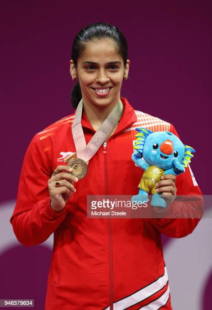
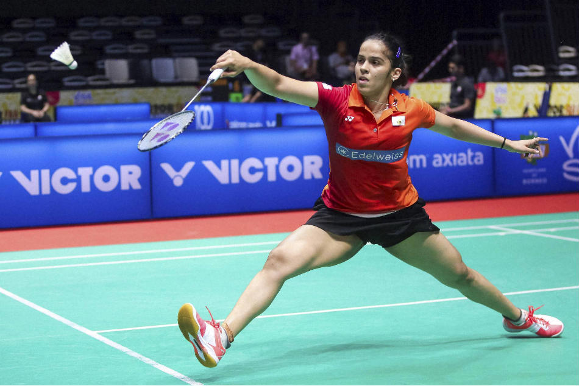
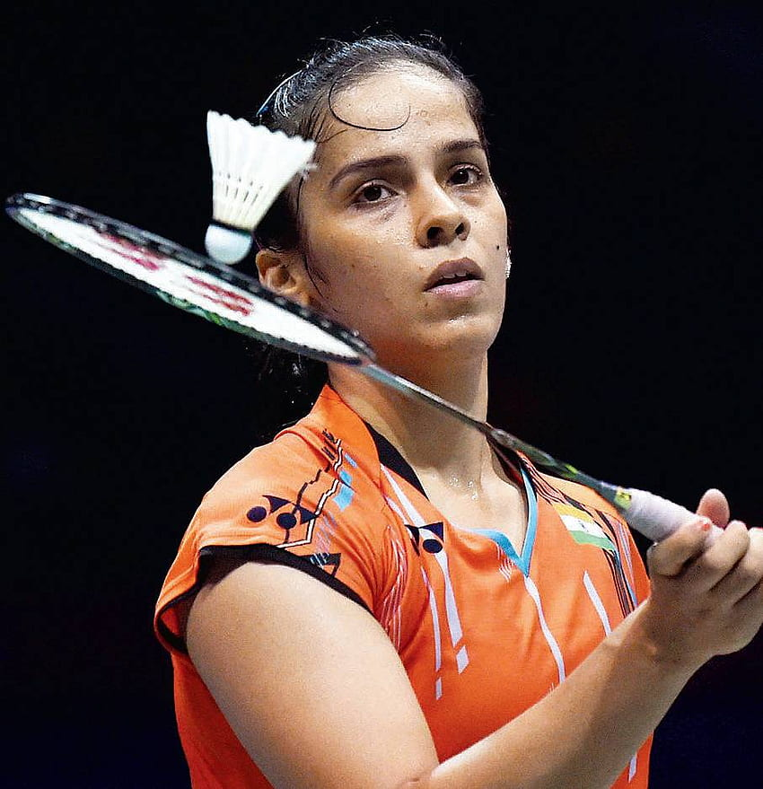

My Favourite Game
Badminton is an indoor sport that is governed by the Badminton World Federation (BWF). The BWF was established in the year 1934, and the first championship was arranged in the year 1977. The players of this game require a lot of energy and are found physically fit. To play this game, a lightweight racket and a shuttlecock are required. Previously, players used cork to play this game, but now, with the permission of BWF, a synthetic shuttlecock is used. This game can be played in singles or doubles, meaning with either one or two players on each side of the badminton court. This game is simple; it does not have any complicated rules and has fewer chances of injuries. The best part about the game is it can be played by people of all age groups and of any gender. Among India’s best badminton players are Saina Nehwal, P.V. Sindhu, P. Gopichand, Srikant Kadambi, and P. Kashyap. These badminton players represent India in various tournaments around the world. The name ‘badminton’ is taken from a country estate owned by the Dukes of Beaufort in England. The game was first played in 1873 in England, and its roots can be traced to China, Greece and India. Badminton is famous in countries like Denmark, Indonesia, Malaysia, and Japan. This game is played not only at the national and international levels but also in various schools and colleges.
There are twoformats in Badminton.
My favorite player is Saina Nehwal
  